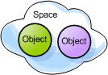
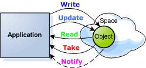
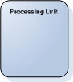
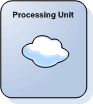
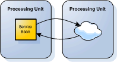
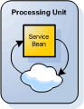

Section Summary: GigaSpaces basic components.
Basic Components
Space
The GigaSpaces cache instance that holds data objects in memory.
Key sentence: The space holds your data objects. |

A space holding objects
|
Read, Write and Take
A set of methods used to read, write, take, and register for notification on objects that are stored in the space. Read critera can be specified via a query or a template (an example object).
Key sentence: Interaction with the space is done using the read, write, update, take and notify methods. |

A client application uses the read, write, take, update and notify methods to exchange objects and receive notifications from the space
|
Service Bean
An application component that interacts with the space (using the read, write, take and notify operations), and implements a certain functionality.
Key sentence: The service bean interacts with the space to implement your application's logic. |
|
Processing Unit
A combination of service beans and/or an embedded space instance. This is the fundamental unit of deployment in GigaSpaces XAP. The Processing Unit itself runs within a Processing Unit Container, and is typically deployed onto the Service Grid. Once a Processing Unit is deployed, a Processing Unit instance is the actual runtime entity.
|

A Processing Unit instance
|
Different Processing Unit Configurations
Processing Unit configured with an embedded space
A deployable package which instantiates an embedded space instance, also called a data grid instance. A set of embedded space instances that run within the processing units typically form a Data Grid. |

A Processing Unit instance with an embedded space
|
Processing Unit configured with one of more services
A deployable package containing one or more services. In the GigaSpaces context, it usually acts as a client that interacts with other Processing Units by utilizing the messaging capabilities of the space. |

A Processing Unit instance containing a Service bean that interacts with a space embedded in another Processing Unit
|
Processing Unit configured with embedded space and embedded services
A deployable, independent, scalable unit, which is the building block of Space-Based Architecture.
Client application (which can also be other processing units) write objects to the space, and the procesing unit which contains this space consumes these objects or is notified about them and triggeres a related services. |

A Processing Unit instance with an embedded service that interacts with an embedded space
|
|